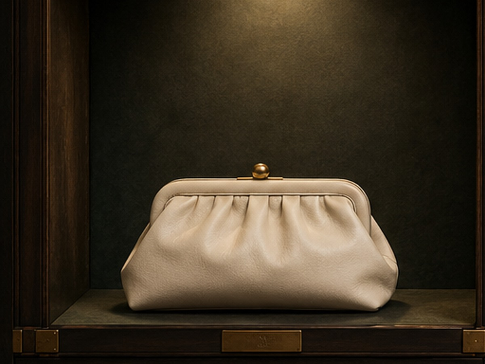
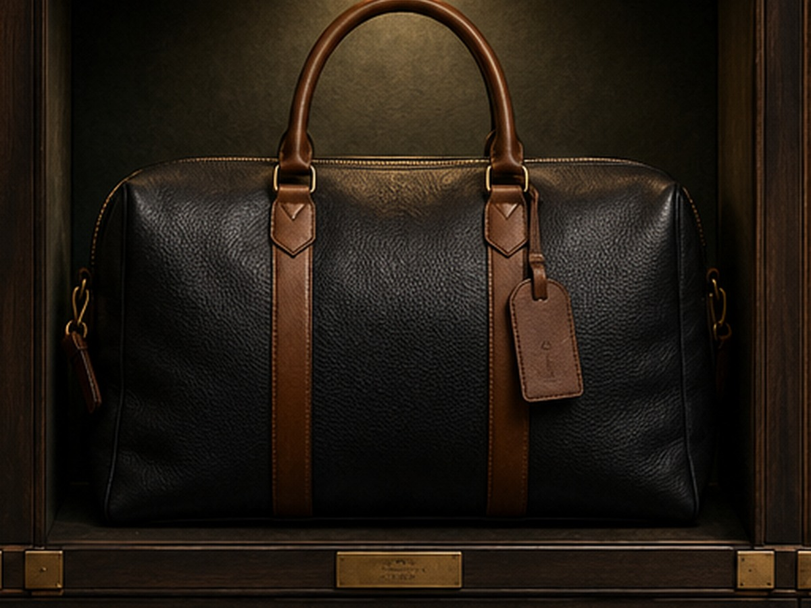
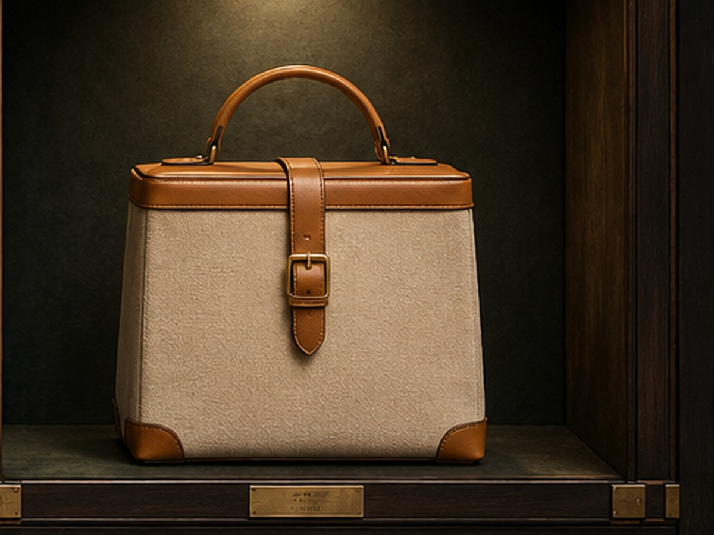

Editorial journal
Useful ideas for a sharper wardrobe.
 Journal 01
Journal 01How to Build a Practical Wardrobe Around Three Reliable Layers
Practical wardrobe guidance and useful decision points.
 Journal 02
Journal 02A Clear Guide to Choosing Outerwear for Changing Weather
Practical wardrobe guidance and useful decision points.
 Journal 03
Journal 03Why Fabric Weight Matters More Than You Think
Practical wardrobe guidance and useful decision points.
Journal 04How to Check Fit Before You Decide a Garment Works
Practical wardrobe guidance and useful decision points.

Journal 05Building Travel Outfits Without Overpacking
Practical wardrobe guidance and useful decision points.
Journal 06How Texture Adds Depth to Simple Everyday Dressing
Practical wardrobe guidance and useful decision points.
Journal 07A Simple Weekly System for Rotating Your Wardrobe
Practical wardrobe guidance and useful decision points.

Journal 08How to Care for Everyday Clothing Without Overcomplicating It
Practical wardrobe guidance and useful decision points.
Journal 09Choosing Clothes Around Movement and Daily Routine
Practical wardrobe guidance and useful decision points.
Journal 10How to Evaluate Construction Before Buying a Jacket
Practical wardrobe guidance and useful decision points.

Journal 11Creating a Flexible Wardrobe for Work and Weekends
Practical wardrobe guidance and useful decision points.
 Journal 12
Journal 12How to Keep a Smaller Wardrobe Feeling Fresh
Practical wardrobe guidance and useful decision points.